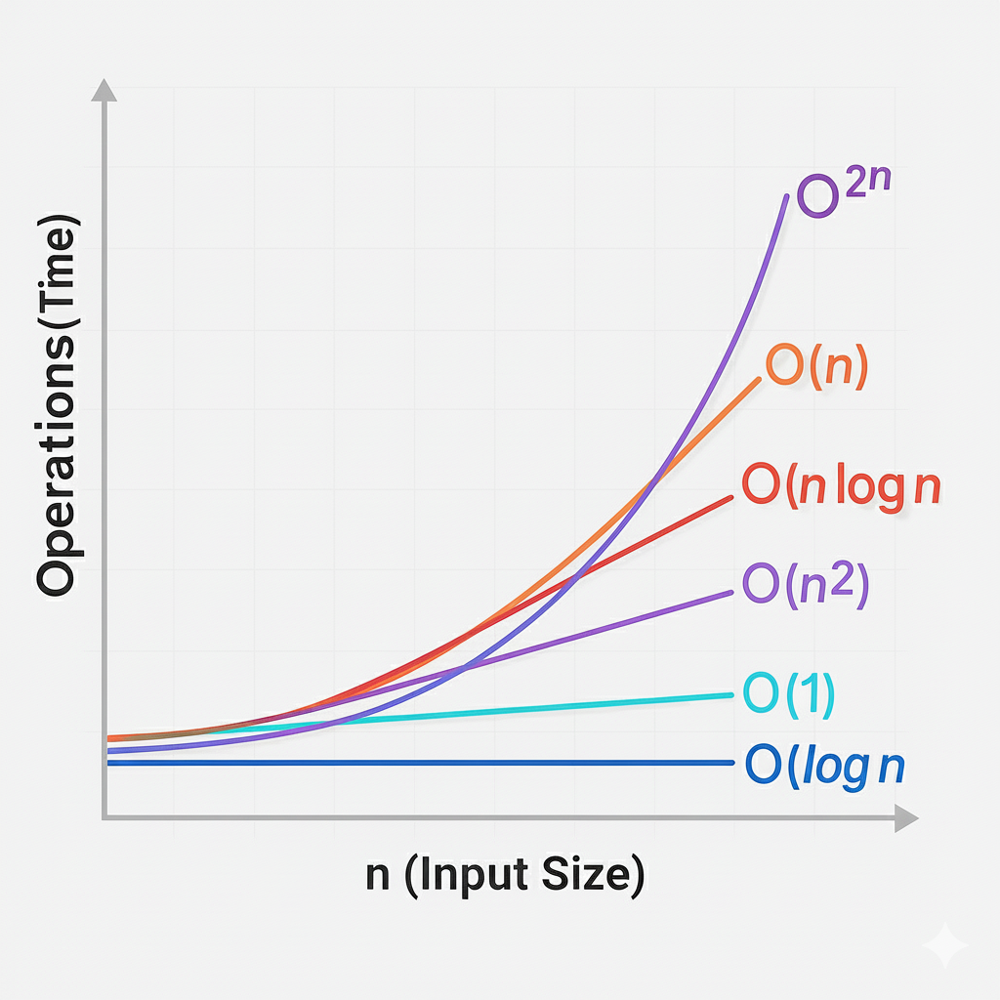

⏱ Time Complexity
Time Complexity is a method used to analyze how the execution time of an algorithm increases as the input size grows. Instead of calculating time in seconds, we focus on how fast the number of operations increases.
Why Time Complexity Matters
Understanding time complexity helps developers write efficient and scalable code. It is especially important in competitive programming and technical interviews where performance matters.
- Helps avoid Time Limit Exceeded (TLE) errors
- Improves problem-solving skills
- Allows comparison between different algorithms
Big-O Notation
Big-O notation describes the worst-case performance of an algorithm. It shows how the runtime grows relative to input size n.
O(1) – Constant Time
The execution time does not change with input size. Accessing an array element by index is a common example.
O(log n) – Logarithmic Time
The input size reduces by half in each step. Binary Search is a classic example of logarithmic time complexity.
O(n) – Linear Time
The algorithm processes each element once. Traversing an array is an example.
O(n log n) – Linearithmic Time
This complexity is common in efficient sorting algorithms like Merge Sort and Quick Sort (average case).
O(n²) – Quadratic Time
Occurs when there are nested loops. Bubble Sort and Selection Sort fall under this category.
O(2ⁿ) – Exponential Time
Execution time doubles with each input increase. Recursive Fibonacci without optimization is a typical example.
Best, Average & Worst Case
Algorithms can behave differently depending on input. Big-O notation mainly focuses on the worst-case scenario to guarantee performance.

How Time Complexity is Calculated?
This is exactly what interviewers and reviewers expect you to understand. Time complexity is calculated by counting how the number of basic CPU operations grows as the input size increases.
| Operation / Code Pattern | Why This Time Complexity |
|---|---|
|
Basic Operations Comparisons Assignments Arithmetic operations Function calls Example: int x = a + b;
|
The CPU executes a fixed number of instructions. Execution time does not depend on input size. Time Complexity: O(1) (Constant Time) |
Single Loop
for(int i = 0; i < n; i++) { }
|
Loop runs n times. Each iteration takes constant time. Time Complexity: O(n) |
Nested Loops
for(int i = 0; i < n; i++) {
|
Outer loop runs n times. Inner loop runs n times for each outer loop. Total operations = n × n = n². Time Complexity: O(n²) |
Loop that halves input
while(n > 1) { n = n / 2; }
|
Input size reduces by half each step. Number of steps = log₂ n. Time Complexity: O(log n) |
Recursive Function
func(n) = func(n-1)
|
One recursive call per level. Recursion depth = n. Time Complexity: O(n) |
In short, time complexity is calculated by identifying how many times the CPU executes basic operations as the input size grows.
Common Student Mistakes
- Confusing execution time with time complexity
- Ignoring nested loops
- Not considering recursion depth
- Thinking faster hardware improves algorithm complexity
Time Complexity in Interviews
Interviewers often ask for time complexity to test analytical thinking. Always explain your approach clearly and justify your complexity.
Now that you understand the fundamentals of time complexity, test your knowledge using quiz questions.